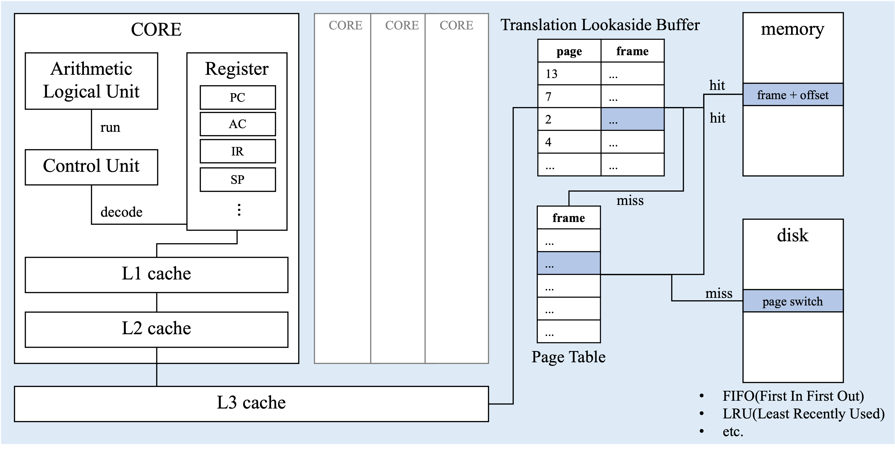
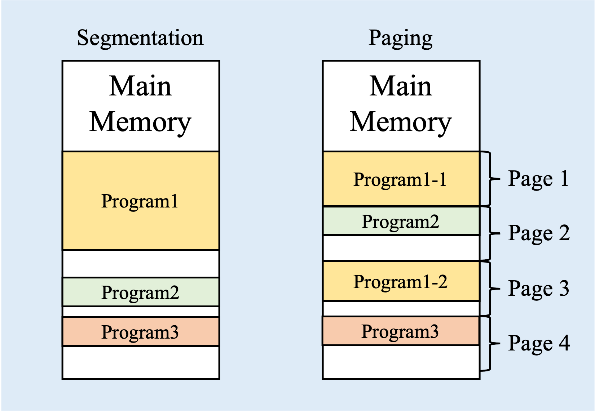
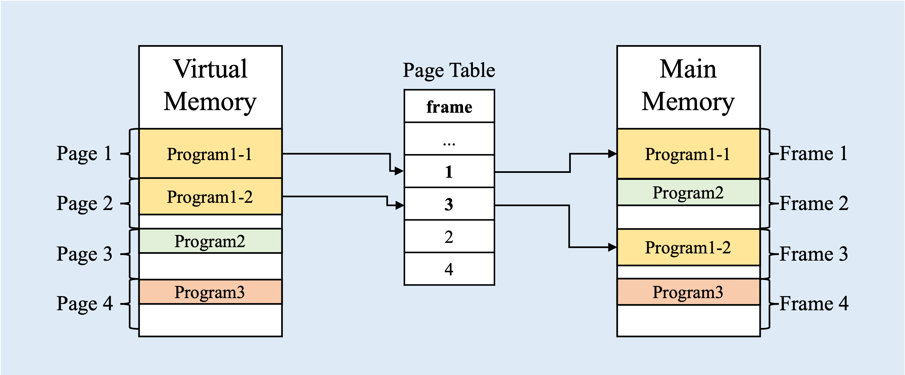
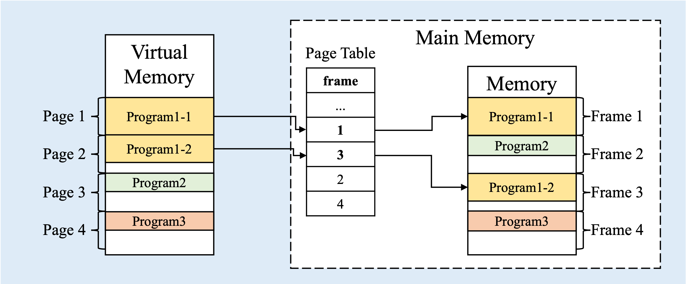
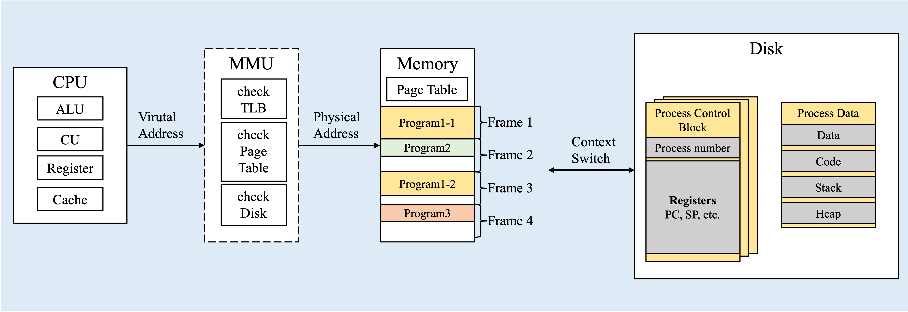

Computer Architecture

- CPU-CORE
- Register : Data storage that needed for CU and ALU
- PC (Program Counter) : store address which is next instruction set
- AC (Accumulator) : temporary store intermediate caculation result
- IR (Instruction Register) : store instruction address that run now
- MAR (Memory Address Register) : temporary store PC
- MBR (Memory Buffer Register) : store instruction
- Register : Data storage that needed for CU and ALU
Example of how CPU run their instruction
ADD addr
1st step, Fetch cycle
load next instruction into IR
1) MAR <- PC
2) MBR <- M[MAR]
3) PC <- PC + 1
4) IR <- MBR2nd step, Execute cycle
get insturction from IR and adding with AC
1) MAR <- IR
2) MBR <- M[MAR]
3) AC <- AC + MBR
in
LOAD addr, 2nd step will be…
- LOAD
1) MAR <- IR
2) MBR <- M[MAR]
3) AC <- MBRin
STORE addr, , 2nd step will be…
- STORE
3-1) MAR <- IR
3-2) MBR <- AC
3-3) M[MAR] <- MBR
- CU(Control Unit) : lead ALU with decoded instructions
- ALU(Arithmetic Logical Unit) : get decoded instructions and calculate bit by bit
- TLB(Translation Lookaside Buffer) : Index Table for transform virtual address into physical address
TLB has {page:frame} pair
- Page Table : same function as TLB, but has no page index column
ex)
address in PC :page number|offsetL1 & L2 & L3 cache miss, find TLB
if TLB has page number, changepage numberintoframe number
if not, find Page Table
if Page Table[page number] is not empty, changepage numberintoframe number
And fetch Register informations from memory that located inframe number|offsetif not, search in disk and fill or replace TLB and Page Table
Why Page Table is needed?
1) CPU can run the process continuously, so it will be fast
2) OS can execute context switching fast
To understand this concept, we need to understand how memory is managed. One Program can be allocated seperately(Page) into memory or just big one chunk(Segment). 
| Paing | Segmentation | |
|---|---|---|
| section size | fixed size pages | variable size sections |
| context switch | fast | slow |
| fragmentation | internal | external |
- Comparison
- Paging can manage memory with fixed size, so can be switched more faster than Segmentation.
Segmentation should know about leftover memory usage, left program memory, limits etc.
- Paging could be result in internal fragmentation that if your program is smaller than page(usally 4KB)
Segmentation has no internal but external fragmentation. Because, as time goes by, the number of small hole in memory is increased. At some point, there is a enough memory left but is not fitted for bigger program.
You can seperate your program to fit with small hole. But when you do this, you lose your advantage of Segmentation.
- Paging can manage memory with fixed size, so can be switched more faster than Segmentation.
So for these reasons, Paging is more popular than segmentation for managing memory!
But here is a problem when if your program is seperately paged. If your program is seperately allocated, CPU needs to know where is next Page.
Here, Page Table can make your program adjacently(which is contignous allocation in virtual memory)!

Why TLB(Translation Lookaside Buffer) is needed?
 Actually, this Page Table is located inside the main memory. Thus, to reference prgoram inside memory, we need to access memory 2 times. This is very inefficient.
Because to access memory, we need to access with memory bus. And this bus is made up with the data bus and the address bus. The speed and delays of an action made in a computer system depends greatly on the address bus since it is the entity locating the information. Which means that if we use address bus a lot, speed will be low!
TLB can reduce the number of access time in memory!. Becuase TLB acts as a cache for Page Table.
I will finish with this figure.
